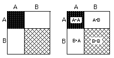
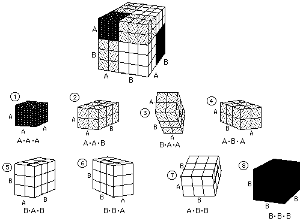

<html>

<head>
<meta http-equiv="Content-Type" content="text/html; charset=windows-1252">
<meta name="GENERATOR" content="Microsoft FrontPage 4.0">
<meta name="ProgId" content="FrontPage.Editor.Document">
<title>binomialexpansion</title>
</head>

<body>

<p align="center"><b><font size="5" face="Arial" color="#800000">Binomial
expansion, Pascal's triangle,</font></b></p>

<p align="center"><b><font size="5" face="Arial" color="#800000">and Ian's great
discovery/Chapter 9</font></b></p>

<blockquote>
  <p class="MsoNormal" style="margin-left:.5in;tab-stops:108.9pt 198.9pt" align="center"><font face="Arial" size="3" color="#800000"><b>Pascal's
  Triangle</b></font></p>
</blockquote>
<p class="MsoNormal" style="margin-left:.5in;tab-stops:108.9pt 198.9pt" align="center"></p>
<font size="3">For about 35 years Don and his students</font> studied Pascal's
triangle above. They found patterns going down each column. <font size="3"> Looking down column
#2 for example- 1, 3, 6, 10 ... the numbers go up 2, then 3 (to get
6), then 4 (to get 10), and so on.</font>
 (and a rule for each-
at least up to the tetrahedral numbers 1, 4, 10,..). Along each diagonal to the
right there are the same patterns, the sum of each row is a powers of 2, and there
is symmetry in the numbers in
each row. <font size="3">They found other patterns; for example if you add two
numbers in a row, like 4+6, you get the number below the 6 in the in the next
row,10.&nbsp; So you can predict the number below 10 in the
next row. What we'd like to do, is to be
able to find the 8th number in the 20th row, though, and that's what Ian found.&nbsp;</font>
<p><font size="4"><b><font color="#FF0000">What Ian did was something special,
and enabled anyone to do it.</font></b> </font><b><font color="#FF0000" size="4">Ian
did this at age 12. Newton did a similar thing when he was 19, according to W.W.
Sawyer in &quot;<u>Integrated Mathematics Scheme- Book C</u>&quot;. Don just
happened to receive this book from England about a week after Ian did his thing</font><font color="#FF0000" size="3">.</font></b><font size="3">
<b>In Ian's words:</b></p>
<p align="left">&quot;I was faced with the problem of generating Pascal's triangle. I decided
to start looking at patterns until I found one that applied to the entire
triangle. After some trial and error, I noticed a pattern in the ratios from one
column to the next. In row 4, for example, the ratios are arrived at by asking,
what times 1 = 4?  What times 4 =
6?  Then 
And 
<p align="center"><font size="2"><br>
</font>
<p align="center"><font size="2"><br>
To get the 8th number in the 20th row:<br>
</font>
<p align="left"><font size="2"><br>
Ian switched from the 'number in the row' to 'the column number'. Since the
columns start with the 0th column, his x is one less than the number in the row,
for example, the 3rd number is in column #2. In other words just subtract 1
first, from the number in the row and use that as x.</font>
<p align="center"><font size="2"><br>
&nbsp;<br>
</font>
<p align="left">And the general term, the number in the <b>x</b>th column, in the
<b>n</b>th
row, of the binomial expansion<sup> </sup>is<font size="2">
<p align="center">&nbsp;</font></font><font size="2">&nbsp;&nbsp;&nbsp;&nbsp; <font size="3"><sup></sup></font></font>

<p align="left"><font size="3">Can you write the first 6 terms of (A+B)<sup>n</sup>
? Here they are (look for patterns!):<sup>&nbsp;&nbsp;</sup></font></p>

<p align="center"><font size="3">Can you write the next 2 terms?</font></p>

<p align="left"><font size="3">See <a href="/html/gracebinoexp.html">Grace's
2nd email to Don on <b>Aug. 8, 2002</b></a><b>,</b> where she generalizes to
find the <b>r</b>th number, in the <b>n</b>th row, in the binomial expansion.</font></p>

<hr>

<p align="center"><font face="Arial" size="3" color="#800000"><span class="Apple-style-span" style="border-collapse: separate; font-style: normal; font-variant: normal; letter-spacing: normal; line-height: normal; orphans: 2; text-align: auto; text-indent: 0px; text-transform: none; white-space: normal; widows: 2; word-spacing: 0px; -webkit-border-horizontal-spacing: 0px; -webkit-border-vertical-spacing: 0px; -webkit-text-decorations-in-effect: none; -webkit-text-size-adjust: auto; -webkit-text-stroke-width: 0px"><b>Using
squares and cubes to get the binomial expansion and Pascal's triangle.</b></span></font></p>

<p align="center"><font face="Arial" size="3"><span class="Apple-style-span" style="border-collapse: separate; color: rgb(0, 0, 0); font-style: normal; font-variant: normal; font-weight: normal; letter-spacing: normal; line-height: normal; orphans: 2; text-align: auto; text-indent: 0px; text-transform: none; white-space: normal; widows: 2; word-spacing: 0px; -webkit-border-horizontal-spacing: 0px; -webkit-border-vertical-spacing: 0px; -webkit-text-decorations-in-effect: none; -webkit-text-size-adjust: auto; -webkit-text-stroke-width: 0px"><br>
The first problem is to find the area of a 5x5 square. 25, of course. Now we'll
break up the side of this square into two pieces, 2 and 3 units (5 as before)
and find the area of each piece.</span></font><font face="Arial"><span class="Apple-style-span" style="border-collapse: separate; color: rgb(0, 0, 0); font-size: medium; font-style: normal; font-variant: normal; font-weight: normal; letter-spacing: normal; line-height: normal; orphans: 2; text-align: auto; text-indent: 0px; text-transform: none; white-space: normal; widows: 2; word-spacing: 0px; -webkit-border-horizontal-spacing: 0px; -webkit-border-vertical-spacing: 0px; -webkit-text-decorations-in-effect: none; -webkit-text-size-adjust: auto; -webkit-text-stroke-width: 0px"><br>
<span class="Apple-converted-space">&nbsp;</span>So
(2+3)<sup>2</sup>= 2*2 + 2*3 + 3*2 + 3*3 = 25<br>
<br>
</span></font><span class="Apple-style-span" style="border-collapse: separate; color: rgb(0, 0, 0); font-style: normal; font-variant: normal; font-weight: normal; letter-spacing: normal; line-height: normal; orphans: 2; text-align: auto; text-indent: 0px; text-transform: none; white-space: normal; widows: 2; word-spacing: 0px; -webkit-border-horizontal-spacing: 0px; -webkit-border-vertical-spacing: 0px; -webkit-text-decorations-in-effect: none; -webkit-text-size-adjust: auto; -webkit-text-stroke-width: 0px"><font face="Arial" size="3">
Sean, who was 8 at the time, wrote this for the area of the square whose sides
are&nbsp;(A+B),</font></span><span class="Apple-style-span" style="border-collapse: separate; color: rgb(0, 0, 0); font-size: medium; font-style: normal; font-variant: normal; font-weight: normal; letter-spacing: normal; line-height: normal; orphans: 2; text-align: auto; text-indent: 0px; text-transform: none; white-space: normal; widows: 2; word-spacing: 0px; -webkit-border-horizontal-spacing: 0px; -webkit-border-vertical-spacing: 0px; -webkit-text-decorations-in-effect: none; -webkit-text-size-adjust: auto; -webkit-text-stroke-width: 0px"><font size="2"><br>
</font></span><span class="Apple-style-span" style="border-collapse: separate; color: rgb(0, 0, 0); font-style: normal; font-variant: normal; font-weight: normal; letter-spacing: normal; line-height: normal; orphans: 2; text-align: auto; text-indent: 0px; text-transform: none; white-space: normal; widows: 2; word-spacing: 0px; -webkit-border-horizontal-spacing: 0px; -webkit-border-vertical-spacing: 0px; -webkit-text-decorations-in-effect: none; -webkit-text-size-adjust: auto; -webkit-text-stroke-width: 0px"><font size="2" face="Arial"><span style="font-size: medium">&nbsp;&nbsp;&nbsp;&nbsp;&nbsp;&nbsp;&nbsp;&nbsp;&nbsp;&nbsp;&nbsp;&nbsp;&nbsp;&nbsp;&nbsp;&nbsp;&nbsp;&nbsp;&nbsp;&nbsp;&nbsp;&nbsp;&nbsp;&nbsp;
</span></font><font face="Arial" size="3">(A + B)<sup>2</sup>&nbsp;=
(A+B)*(A+B) = A*A + A*B + B*A + B*B</font></span></p>
<p align="center"><font face="Arial" size="3"><span style="border-collapse: separate; font-style: normal; font-variant: normal; letter-spacing: normal; line-height: normal; orphans: 2; text-align: auto; text-indent: 0px; text-transform: none; white-space: normal; widows: 2; word-spacing: 0px; -webkit-border-horizontal-spacing: 0px; -webkit-border-vertical-spacing: 0px; -webkit-text-decorations-in-effect: none; -webkit-text-size-adjust: auto; -webkit-text-stroke-width: 0px" class="Apple-style-span"><b><font color="#FF0000">He said these are the possible ways of
putting the two letters, A and B together, 2 at a time!</font></b></span></font><span class="Apple-style-span" style="border-collapse: separate; color: rgb(0, 0, 0); font-size: medium; font-style: normal; font-variant: normal; font-weight: normal; letter-spacing: normal; line-height: normal; orphans: 2; text-align: auto; text-indent: 0px; text-transform: none; white-space: normal; widows: 2; word-spacing: 0px; -webkit-border-horizontal-spacing: 0px; -webkit-border-vertical-spacing: 0px; -webkit-text-decorations-in-effect: none; -webkit-text-size-adjust: auto; -webkit-text-stroke-width: 0px"><font size="2"><font face="Arial"><br>
<center>(A + B)<sup><font size="-2">2</font></sup><span class="Apple-converted-space">&nbsp;</span>=
A<sup><font size="-2">2</font></sup><span class="Apple-converted-space">&nbsp;</span>+
2*A*B + B<sup><font size="-2">2</font></sup></center></font></font></span></p>
<p align="center"><font size="3"><font face="Arial"><span class="Apple-style-span" style="border-collapse: separate; color: rgb(0, 0, 0); font-size: medium; font-style: normal; font-variant: normal; font-weight: normal; letter-spacing: normal; line-height: normal; orphans: 2; text-align: auto; text-indent: 0px; text-transform: none; white-space: normal; widows: 2; word-spacing: 0px; -webkit-border-horizontal-spacing: 0px; -webkit-border-vertical-spacing: 0px; -webkit-text-decorations-in-effect: none; -webkit-text-size-adjust: auto; -webkit-text-stroke-width: 0px">Using
the distributive property you would get the same thing. Then he went on to do<font size="2"><span class="Apple-converted-space">&nbsp;</span>(A
+ B)<sup><font size="-2">3</font></sup></font><span class="Apple-converted-space">&nbsp;</span>the
same way, </span><font color="#FF0000"><span class="Apple-style-span" style="border-collapse: separate; font-size: medium; font-style: normal; font-variant: normal; letter-spacing: normal; line-height: normal; orphans: 2; text-align: auto; text-indent: 0px; text-transform: none; white-space: normal; widows: 2; word-spacing: 0px; -webkit-border-horizontal-spacing: 0px; -webkit-border-vertical-spacing: 0px; -webkit-text-decorations-in-effect: none; -webkit-text-size-adjust: auto; -webkit-text-stroke-width: 0px"><b> saying this would be the number of ways to use 2 letters, 3 at a time.</b></span></font><span class="Apple-style-span" style="border-collapse: separate; color: rgb(0, 0, 0); font-size: medium; font-style: normal; font-variant: normal; font-weight: normal; letter-spacing: normal; line-height: normal; orphans: 2; text-align: auto; text-indent: 0px; text-transform: none; white-space: normal; widows: 2; word-spacing: 0px; -webkit-border-horizontal-spacing: 0px; -webkit-border-vertical-spacing: 0px; -webkit-text-decorations-in-effect: none; -webkit-text-size-adjust: auto; -webkit-text-stroke-width: 0px">
He got<center><font size="2">(A + B)<sup><font size="-2">3</font></sup>= A*A*A +
A*A*B + A*B*A + B*A*A + A*B*B + B*A*B + B*B*A + B*B*B.</font></center></span></font><span class="Apple-style-span" style="border-collapse: separate; color: rgb(0, 0, 0); font-size: medium; font-style: normal; font-variant: normal; font-weight: normal; letter-spacing: normal; line-height: normal; orphans: 2; text-align: auto; text-indent: 0px; text-transform: none; white-space: normal; widows: 2; word-spacing: 0px; -webkit-border-horizontal-spacing: 0px; -webkit-border-vertical-spacing: 0px; -webkit-text-decorations-in-effect: none; -webkit-text-size-adjust: auto; -webkit-text-stroke-width: 0px"><font size="2"><font face="Arial"><b>or</b><br>
<center>(A + B)<sup><font size="-2">3</font></sup>= A<sup><font size="-2">3</font></sup><span class="Apple-converted-space">&nbsp;</span>+
3* A<sup><font size="-2">2</font></sup>*B + 3*A*B<sup><font size="-2">2</font></sup><span class="Apple-converted-space">&nbsp;</span>+
B<sup><font size="-2">3</font></sup></center>
</font></font></span></font></p>
<p align="center"><font size="3"><font size="2"><span class="Apple-style-span" style="border-collapse: separate; color: rgb(0, 0, 0); font-size: medium; font-style: normal; font-variant: normal; font-weight: normal; letter-spacing: normal; line-height: normal; orphans: 2; text-align: auto; text-indent: 0px; text-transform: none; white-space: normal; widows: 2; word-spacing: 0px; -webkit-border-horizontal-spacing: 0px; -webkit-border-vertical-spacing: 0px; -webkit-text-decorations-in-effect: none; -webkit-text-size-adjust: auto; -webkit-text-stroke-width: 0px"><font face="Arial">
<center><br>
</font></span></font><font face="Arial"><span style="border-collapse: separate; color: rgb(0, 0, 0); font-style: normal; font-variant: normal; font-weight: normal; letter-spacing: normal; line-height: normal; orphans: 2; text-align: auto; text-indent: 0px; text-transform: none; white-space: normal; widows: 2; word-spacing: 0px; -webkit-border-horizontal-spacing: 0px; -webkit-border-vertical-spacing: 0px; -webkit-text-decorations-in-effect: none; -webkit-text-size-adjust: auto; -webkit-text-stroke-width: 0px" class="Apple-style-span">Don
has
2-cm cubes which he made into the pieces
below. He has students build a cube out of them, then name<span style="border-collapse: separate; color: rgb(0, 0, 0); font-style: normal; font-variant: normal; font-weight: normal; letter-spacing: normal; line-height: normal; orphans: 2; text-align: auto; text-indent: 0px; text-transform: none; white-space: normal; widows: 2; word-spacing: 0px; -webkit-border-horizontal-spacing: 0px; -webkit-border-vertical-spacing: 0px; -webkit-text-decorations-in-effect: none; -webkit-text-size-adjust: auto; -webkit-text-stroke-width: 0px"> each piece and write
the identity above.</span></span></font></center></font></p>
<p class="MsoNormal" style="tab-stops:108.9pt 198.9pt" align="center">
<center><span class="Apple-style-span" style="border-collapse: separate; color: rgb(0, 0, 0); font-size: medium; font-style: normal; font-variant: normal; font-weight: normal; letter-spacing: normal; line-height: normal; orphans: 2; text-align: auto; text-indent: 0px; text-transform: none; white-space: normal; widows: 2; word-spacing: 0px; -webkit-border-horizontal-spacing: 0px; -webkit-border-vertical-spacing: 0px; -webkit-text-decorations-in-effect: none; -webkit-text-size-adjust: auto; -webkit-text-stroke-width: 0px"><font size="2" face="Arial">&nbsp;&nbsp;&nbsp;&nbsp;&nbsp;&nbsp;&nbsp;&nbsp;&nbsp;&nbsp;&nbsp;&nbsp;&nbsp;&nbsp;&nbsp;&nbsp;&nbsp;&nbsp;&nbsp;&nbsp;&nbsp;&nbsp;&nbsp;&nbsp;&nbsp;&nbsp;&nbsp;&nbsp;&nbsp;&nbsp;&nbsp;&nbsp;&nbsp;&nbsp;
<font size="3">
</font></font></span></center></p>
<p class="MsoNormal" style="tab-stops:108.9pt 198.9pt">
<font size="3"><font size="2">
What do we have
so far?<br>
</font>(A + B)</font><font size="2"><font size="3"><sup><font size="-2">0</font></sup> = <b>1</b></font><b>&nbsp;&nbsp;</b></font><b><font size="3">
(10</font><font size="2"><sup>0</sup></font><font size="3"> = 1, 2</font><font size="2"><sup>0</sup></font><font size="3"> = 1, 0</font><font size="2"><sup>0</sup></font><font size="3"> is <font color="#FF0000"> not
</font> = to 1)</font></b>
<font size="3"><br>
(A + B)<sup><font size="-2">1</font></sup> = <b>1</b>*A&nbsp;&nbsp;
+ <b>1</b>*B<br>
(A + B)<sup><font size="-2">2</font></sup> = <b>1</b>*A<sup><font size="-2">2</font></sup>
+ <b>2</b>*A<sup><font size="-2">1</font></sup>*B<sup><font size="-2">1</font></sup>
+ <b>1</b>*B<sup><font size="-2">2</font></sup><br>
(A + B)<sup><font size="-2">3</font></sup> = <b>1</b>*A<sup><font size="-2">3</font></sup>
+ <b>3</b>*A<sup><font size="-2">2</font></sup>*B<sup><font size="-2">1</font></sup>
+ <b>3</b>*A<sup><font size="-2">1</font></sup>*B<sup><font size="-2">2</font></sup>
+ <b>1</b>*B<sup><font size="-2">3</font></sup><br>
(A + B)<sup><font size="-2">4</font></sup> = <b>1</b>*A<sup><font size="-2">4</font></sup>
+ <b>4</b>*A<sup><font size="-2">3</font></sup>*B<sup><font size="-2">1</font></sup>
+ <b>6</b>*A<sup><font size="-2">2</font></sup>*B<sup><font size="-2">2</font></sup>
+ <b>4</b>*A<sup><font size="-2">1</font></sup>*B<sup><font size="-2">3</font></sup>
+ <b>1</b>*B<sup><font size="-2">4</font></sup><br>
<font size="3">What patterns do you see in the above work? In the bolded numbers
(the coefficients)? In the exponents? How many terms in each row? What is the
sum of the coefficients in each row? Can you write down the next 2 rows?</font></font></p>
<p class="MsoNormal" style="tab-stops:108.9pt 198.9pt" align="center"><b><font color="#800000" size="4">Other
ways to get the binomial expansion coefficents (Pascal's triangle)</font></b></p>
<p class="MsoNormal" style="tab-stops: 108.9pt 198.9pt; margin-left: .5in"><b><font face="Arial" size="4">People
pieces </font></b><font face="Arial" size="3"> (In Don's WS book)-there are 16 pieces, 4 attributes. Pick one person,
find other people that are different in only one way from your pick. Put these
in a column next to your pick. Then, in a
column next to those, put those people that are only 2 ways different from your
pick, then 3 ways, then 4 ways.&nbsp;</font></p>
<blockquote>
  <p class="MsoNormal" style="margin-left:.5in;tab-stops:108.9pt 198.9pt" align="center"><font face="Arial" size="3">&nbsp;
  </font></p>
  <b>
  <p class="MsoNormal" style="margin-left:.5in;tab-stops:108.9pt 198.9pt" align="left"><font face="Arial" size="3"> [As Alex said, &quot;the
  tiles look like a graph - 1 4
6 4 1,  &quot;;
  for</font></p>
  <p class="MsoNormal" style="margin-left:.5in;tab-stops:108.9pt 198.9pt" align="left">&nbsp;</p>
  <p class="MsoNormal" style="margin-left:.5in;tab-stops:108.9pt 198.9pt" align="left"><font face="Arial" size="3">two
  more of Alex's great insights (look at &quot;Infinite
Series&quot; on the Map)!]</font></p>
  <p class="MsoNormal" style="margin-left:.5in;tab-stops:108.9pt 198.9pt" align="left">&nbsp;</p>
  <p class="MsoNormal" style="margin-left:.5in;tab-stops:108.9pt 198.9pt"><span style="color:black"><b><font face="Arial" size="4">Number
  of routes between points</font></b><font face="Arial" size="3">
  </font> </span><font face="Arial" size="3">(In Don's WS book)<o:p>
  </o:p>
  </font></p>
  <p class="MsoNormal" style="margin-left:.5in;tab-stops:108.9pt 198.9pt"><span style="color: black"><b><font face="Arial" size="4">Number
  of ways to turn on and off light switches<o:p>
  </font></b><font face="Arial" size="3">
  </o:p>
  </font>
  </span></p>
  <p class="MsoNormal" style="margin-left:.5in;tab-stops:108.9pt 198.9pt"><span style="color: black"><b><font face="Arial" size="4">Number
  of ways 3 coins come up when flipped<o:p>
  </font></b><font face="Arial" size="3">
  (<a href="/html/binlexpbytossingpennies.html">see Tadeo
  &amp; Don's work</a>)</o:p>
  </font>
  </span></p>
  <p class="MsoNormal" style="margin-left:.5in;tab-stops:108.9pt 198.9pt"><font color="#800080"><font face="Arial" size="4">Number
  of ways to make a train as long as the yellow rod</font><font face="Arial" size="3"> 
  (using <i style="mso-bidi-font-style:normal">Cuisenaire
  Rods�</i>):</font></font></p>
  <p class="MsoNormal" style="margin-left:.5in;tab-stops:108.9pt 198.9pt" align="center"></p>
  <p class="MsoNormal" style="margin-left:.5in;tab-stops:108.9pt 198.9pt"><span style="color: black"><font face="Arial" size="3">On
  4-29&amp;30-10, Don asked 5 students-Shaleen, Anushka, AnnEmily, Townes and Kashuv-
  to each take a rod- red, light green, purple, yellow and dark green. They were
  asked to make trains as long as that rod. Townes started with the orange and
  soon AnnEmily told him he would need 512 trains! Don had them enter the number
  of trains in this table below. Many of them came up short and Don suggested
  they look at other ways to make the trains. AnnEmily saw that&nbsp; the
  y-numbers were doubling, so Don wrote her recursive rule as y2= 2*y1.; then he
  showed her that she could write these as powers of 2. She ended up with the
  function rule 2</font><font face="Arial" size="2"><sup>(x-1)</sup> = </font><font face="Arial" size="3">y
  to get the number of trains from the length of the rod.</font></span></p>
  <p class="MsoNormal" style="margin-left:.5in;tab-stops:108.9pt 198.9pt" align="left"></p>
  <p class="MsoNormal" style="margin-left:.5in;tab-stops:108.9pt 198.9pt" align="left">Don
  asked Shaleen to put the trains for the yellow rod in order of the # of cars
  in the train..1-car tains, 2-car trains, and so on. he came up with the
  following. Don took a picture of Shaleen's trains, but because of the flash,
  distortion and persective, Don felt the need to draw in the cracks to enhance
  the picture:</p>
  <p class="MsoNormal" style="margin-left:.5in;tab-stops:108.9pt 198.9pt" align="center"></p>
  </b><p class="MsoNormal" style="margin-left:.5in;tab-stops:108.9pt 198.9pt" align="left"><font size="3">&nbsp;At this time, Don
  started making the patterns on graph paper to show Pascal's triangle- he used
  Shaleen's 1 4 6 4 1 above, and others filled in their row. Don also had
  Shaleen work on (a+b)</font><font size="2"><b><sup>2</sup></b></font><font size="3">
  by using the distributive property, and (a+b)</font><font size="2"><b><sup>3</sup></b></font><font size="3">,
  to see the coefficients were these same numbers they were getting, and left
  him to find (a+b)</font><b><font size="2"><sup>4</sup> . </font></b><font size="3">Anushka
  wrote her <font color="#800080"><b>purple</b></font> trains using letters,
  like- w,w,r&nbsp; in her book, without Don saying anything! <b>A couple of very exciting
  sessions!</b></font></p>
  <b>
</blockquote>
<p class="MsoNormal" style="tab-stops: 108.9pt 198.9pt">See Chapter <a href="prob9.html">9
</a>and <a href="prob9a.html">9a</a></p>

  <p class="MsoNormal" style="tab-stops: 108.9pt 198.9pt"><font size="3">We go on
to show how the binomial expansion in the form (1 - x)<sup><sup>-</sup>1</sup>
is related to an infinite series, and later in <a href="/html/prob10.html"> chapter 10</a> 
use it to find the square root of 2, and later still in
<a href="/html/prob11.html"> ch.11</a>
to find infinite series for </font><font size="4">e</font><font size="3">, </font><font size="4">e</font></b><font size="2"><sup><b>x</b></sup><b>,</b></font><b><font size="2"><sup>
  </sup></font><font size="4">e</font><font size="2"><sup>ix</sup> ,</font><font size="3"><sup>
  </sup>sin x and cos x.</font></p>

</body>

</html>
